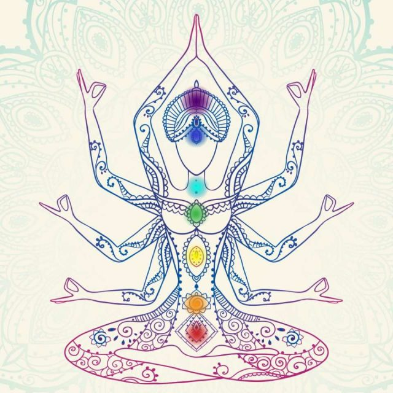

Je te propose un voyage au cœur de toi, d'un an, avec moi, mon parcours et mes expériences.
Un an pour apprendre à te connaître. Te connaître vraiment.
Un an pour explorer, être conscient et avoir une autre vision de tes différents corps: physique, mental, émotionnel et énergétique.
Un an pour t'éclairer, te guider, redonner du sens à tes projets, à avoir une vie plus alignée avec ce que tu désires profondément, plus alignée avec toi.
Un an pour s'ancrer et s'élever ensemble.
Un an pour remplir sa vie de joie, d'amour, de gratitude, de créativité, de liberté, d’abondance.
Si tu ressens le besoin de travailler sur toi, tes pensées, tes émotions, ton corps;
Si tu ressens que tu n’es plus en accord avec tes envies, tes besoins;
Si tu ressens des blocages dans ta vie dont tu veux te libérer pour avancer;
Ce voyage est pour toi.
Mais surtout rappelle toi que tout est en toi, et que je suis là pour t’aider à le mettre en lumière.
Alors, on part en voyage ensemble?
Voyage au coeur de soi, c'est un programme qui va te permettre de t'ancrer, t'aligner, t'élever.
Tout au long de cette année je vais t'aider à comprendre, alléger et nourrir ton corps, ton mental et ton âme, grâce aux différents outils que j'utilise pour moi ainsi que les personnes qui viennent me voir - l’ayurveda, le yoga, les pratiques chamanique et la décoration holistique - et mon expérience. Que cela soit en individuel ou en groupe
Un accompagnement avec l'ayurveda, le yoga, les pratiques chamaniques et le développement personnel.
Je te laisse aller jeter un oeil sur cette page: L'ayurvéda
Car je crois en l'adage ‘’Seul on avance plus vite, mais accompagné on avance plus loin”, il est important pour moi de vous proposer des cercles d'échange.
Je te propose également un accompagnement en cours de yoga en ligne sur une année soit 80 cours au choix parmis ceux que je propose - Yin, Hatha, Vinyasa, Ashtanga, Pré et post natal. Ces cours te permettront de travailler plus dans la matière ce qui a été vu lors des différents partages, de les intégrer dans ton corps. Cela te permettra aussi de te reconnecter à ton corps, celui qui habrite ton âme, celui qui te permet de faire toutes ces belles choses au quotidien.
| Nombre de mois | Transformer | Incarner | Evoluer | Métamorphoser | Alchimiser |
|---|---|---|---|---|---|
| 3 : S'ancrer | 1110€ | 1470€ | 225€ | 1260€ | 1620€ |
| 6 : Se révéler | 2110€ | 2820€ | 420€ | 2490€ | 3100€ |
| 9 : S'aligner | 3000€ | 4070€ | 585€ | 3390€ | 4460€ |
| 12 : S'élever | 3900€ | 5320€ | 720€ | 4380€ | 5800€ |
Les programmes:
Possibilité de parrainage/marrainage : -50€ pour les deux, dans la limite de 2 parrainages par personne.
Possibilité de payé en plusieurs fois.
Ce voyage, c'est le tien. Tu es au commande de ta vie. Je suis là pour t'aider à avancer dans l'inconnu. Alors on saute ensemble pour un an de découverte de soi, de travail sur soi, pour vivre sa vie?